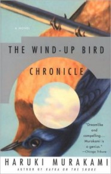

After his wife disappears, unemployed 30-year-old paralegal Toru Okada gets embroiled in a surreal, sprawling drama--part detective story, part history lesson, part metaphysical speculation, part satire--that marks Japanese novelist Murakami's (Dance Dance Dance) most ambitious work to date. As Okada searches for his wife (in an abandoned lot near his home, and in a city park), he encounters characters who are dream-like projections of his own muted fears and desires--among them, a precocious, death-obsessed, 16-year-old neighbor and Okada's brother-in-law, a sinister politician. Peculiar events and strange coincidences abound. A mysterious woman calls Okada regularly, insisting on phone sex. A mystical experience at the bottom of a dry well leaves him with a blue stain on his cheek. Although Okada seems to be sleepwalking through his adventures, new acquaintances feel compelled to share their life stories with him and offer wild tales of violence and passion, tales that contrast strongly with the numbness that settles like a DeLillo-esque cloud over the novel's events (one character, witness to gruesome wartime torture, speaks of having ""burned up the very core of my life""). As Okada discovers, these disparate characters are linked by the memory of the 1939 massacre of Japanese troops by Soviet tanks at Nomonhan on the Manchurian border, and this massacre comes to symbolize the senseless violence and political evils, past and present, that haunt Japan in the second half of the 20th century. Ingeniously, Murakami links history to a detective story that uses a mannered realism and metaphysical speculation to catapult the narrator into the surreal place where mysteries are solved and evil is confronted. (Oct.)